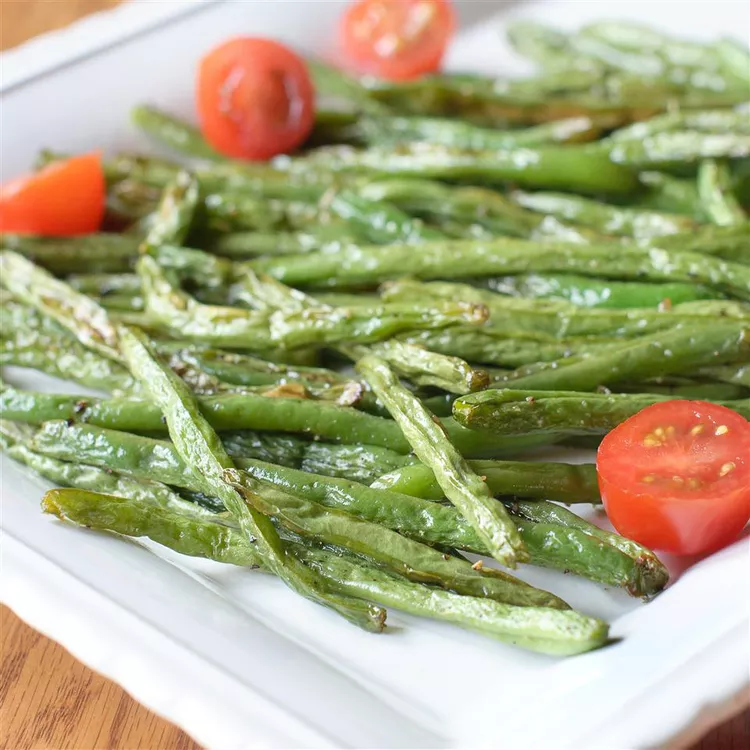

Home
Roasted Green Beans

Ingredients
- 2 pounds fresh green beans, trimmed
- 1 tablespoon olive oil, or as needed
- 1 teaspoon kosher salt
- ½ teaspoon freshly ground black pepper
Steps
-
Gather all ingredients and preheat the oven to 400 degrees F (200
degrees C).
-
Rinse green beans and pat dry with paper towels; spread onto a rimmed
baking sheet. Drizzle beans with olive oil, then season with salt and
pepper. Use your hands to toss the beans until evenly coated with oil;
spread out in a single layer.
-
Roast in the preheated oven until beans are crisp-tender, look slightly
shriveled, and start to show golden caramelized spots, 15 to 25 minutes.
- Serve and enjoy!